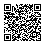

SENTINELA
Polícia Penal do Maranhão
Acesso e instalação
Use o login e a senha do seu perfil do Sentinela. O acesso não exige conta Gmail.
Abrir o sistemaAndroid
Abra o sistema no Chrome. No menu do navegador, escolha Instalar aplicativo ou Adicionar à tela inicial.
iPhone e iPad
Abra no Safari, toque em Compartilhar e escolha Adicionar à Tela de Início.
Computador
No Chrome ou Edge, abra o sistema e escolha a opção de instalação na barra de endereço ou no menu Aplicativos.
QR Code de acesso

Desenvolvimento: Cliciano Vieira da Silva.